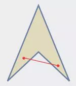

PolígonosLa palabra polígono proviene de las raíces poly´s que significa "muchos" y gonía que significa "ángulo", por lo tanto es un trazo que contiene muchos ángulos. Los polígonos son figuras cerradas formadas por segmentos sucesivos de recta (sus lados), unidos de modo que cada segmento sólo toca a otros dos por sus extremos y no es colineal con ellos.
Notación de los polígonosComo se aprecia en la figura, los polígonos se nombran mediante letras mayúsculas situadas en los vértices del mismo.
Su notación se efectúa escribiendo las letras mayúsculas, después de la palabra polígono o del nombre específico del polígono o también por sus símbolos gráficos.
Características de los polígonos
a) Lados. Son las rectas que limitan al polígono.
b) Ángulos internos. Son los formados por dos lados consecutivos.
c) Ángulos externos. Son los formados por un lado y la prolongación del lado adyacente. Cada ángulo externo es suplemento del ángulo interior adyacente.
d) Vértices. Son los puntos de union de dos lados consecutivos.
e) Diagonales. Son las rectas que unen dos vértices no consecutivos del polígono.
Condiciones de un polígono• Cada lado está unido a otros dos por sus extremos.
• Cada lado interseca únicamente a otros dos.
• Ningún par de lados consecutivos está en una misma recta.
Existen polígonos cuyos lados no están en un solo plano. Se les llama polígonos alabeados.
El estudio de los polígonos convexos es fundamental en geometría. Las clasificaciones y propiedades que siguen se referirán únicamente a este tipo de polígonos.
Poligonal abierta
Son los segmentos que no pertenecen a una misma recta, ordenados de manera que cada uno de los intermedios tenga un extremo común con el anterior y otro con el que le sigue.
Poligonal cerrada
Es una poligonal en la que el extremo del último segmento y el origen del primero coinciden
Clasificación de polígonos
POR EL TAMAÑO DE SUS ÁNGULOS
Polígonos Convexos. Se denominan convexos si todo segmento que une dos de sus puntos interiores queda dentro de la figura. Todos sus ángulos interiores miden menos de 180°.
Polígonos Cóncavos. Si, por el contrario, alguno de tales segmentos, o parte de él, queda fuera de la figura, se denominan cóncavos. Tienen uno o mas ángulos interiores mayores a 180°.

POR EL TAMAÑO DE SUS LADOS
Polígonos regulares. Son aquellos que tienen todos sus lados y todos sus ángulos iguales, es decir, que son equiláteros y equiángulos.
Polígonos irregulares. Son aquellos que no tienen todos sus lados y ángulos iguales, es decir, cuando no son regulares.
POR EL NUMERO DE SUS LADOS
Ejemplo 1. ¿Cuál de las siguientes figuras es un polígono y cuál no?
a) Es un polígono pues cumple las tres condiciones de la definición:
• Cada lado está unido a otros dos por sus extremos.
• Cada lado interseca únicamente a otros dos.
• Ningún par de lados consecutivos está en una misma recta.
b) No es un polígono. Como figura de cuatro lados, AB, BC, CD y DA, no cumpliría la segunda condición enunciada antes, pues aunque BC está unido a AB y CD por los extremos y no es colineal con ninguno de ellos, interseca a otro lado, AD. Como unión de seis segmentos, AB, BE, EC, CD, DE y EA, tampoco es un polígono: dos lados consecutivos (BE y EC) son colineales.
Ejemplo 2. Indica si cada polígono es cóncavo o convexo, regular o irregular, y nómbralo de acuerdo con su número de lados.
a) Polígono convexo, regular. Por tener ocho lados se denomina octágono.
b) Polígono cóncavo, irregular. Se denomina heptágono por tener siete lados.
Ejemplo 3. En este dibujo en perspectiva, observa el detalle mostrado en la figura. Además de los rectángulos, ¿Cuáles polígonos puedes reconocer?
Un trapecio en la pared, dos paralelogramos en el pasamanos, y cuadrados y triángulos en los mosaicos del descanso de la escalera.